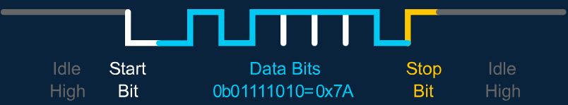

Les communications
Introduction au serial
Pour communiquer entre le pc et une carte électronique, un moyen souvent utilisé est la transmission Série ou Serial. C’est un protocole de communication qui a l’avantage d’être simple et surtout, facilement programmable. Le principe est qu'un seul bus de donnée relie deux appareil et permet la communication en envoyant un par les les trames de données. En gros on les relie par un fils...
Communication avec le pc
Comment utiliser le serial pour débugger, sans rentrer du tout dans les détails :
Pour utiliser le serial il faut modifier le fichier platformio.ini et y rajouter l'instruction monitor_speed = baudrate.

Ensuite pour accéder au moniteur série il suffit de cliquer sur l'icone en bas de l'écran :

Si vous faisiez le tuto Lecture d'un potentiomètre, pas besoin d'aller plus loin dans l'immédiat. Vous devriez pouvoir lire des messages du moniteur.
Avec maintenant un peu plus de détails :
La manière la plus courante pour communiquer entre un PC et une carte embarquée est via les ports USB des 2 objets en question.
Ainsi, repérez le port mini usb sur la nucleo, puis branchez y l’adaptateur USB-microUSB jusqu’au PC.
Qu’est-ce qu’il se passe sur le PC ?
Rien d’apparent, mais sous linux, les périphériques sont situés dans le dossier /dev/tty.
Dans le terminal faites ls /dev/tty*
Vous devriez avoir avec cette commande plein de résultats. Maintenant débranchez l'usb et refaite la commande. Vous devrier en avoir un de moins. Si vous jouez au 7 différences vous devrier en trouver un du genre ttyACMX. Moi par exemple j'ai ttyACM0. C’est notre nucleo ! Ensuite, on utilise la bilbiothèque Arduino qui utilise les standards de print du C/C++.
Pour configurer le serial on rajoute dans le setup Serial.begin(baudrate);, ou baudrate et le nombre de BAUD, dans le cas présent cela signifie le nombre de bits par seconde. Ici utilisez la valeur 115200.
Maintenant pour envoyer un message dans le moniteur série on peut faire Serial.print("Salut les enaciens !"); dans le setup.
Pour formater un message on à plusieur solutions.
- On peut spécifier la Base à utiliser ou l'arrondi pour un nombre par exemple:
Serial.print(78, BIN) donne "1001110"
Serial.print(78, OCT) donne "116"
Serial.print(78, DEC) donne "78"
Serial.print(78, HEX) donne "4E"
Serial.print(1.23456, 0) donne "1"
Serial.print(1.23456, 2) donne "1.23"
Serial.print(1.23456, 4) donne "1.2346"
- On peut mélanger du texte et des nombres avec
printf().
Par exemple pour votre led à la page précédente nous avions fait
Serial.printf("potar = %d, led = %d \n", potar_value, led_value);
%d sert à signifier qu'un type int va venir se mettre lat, puis on le passe en argument c'est potar_value. Il faut respecter l'ordre dans lequel on l'écrit. On peut utiliser %f pour un float et il en existe d'autres, cherchez Format Specifiers sur internet.
UART
L'Universal Asynchronous Receiver Transmitter ou UART est un composant matériel qui permet l'échange de donnée entre deux appareils utilisant le protocole série.

La transmission est asynchrone c'est à dire qu'il n'y a pas de signal d'horloge pour synchroniser les messages. Au lieu de cela on utilise un bit de Start et un ou deux bits de Stop pour chaque données. Il y'a aussi optionellement un bit de parité utilisé pour la détéction d'erreur placé en amont des bits de stop. La vitesse de transmission est en Baud.
Communiquer avec le moniteur série
L'UART est ce qui nous permet de communiquer entre le pc et le microcontrolleur. En fait lorsque vous utilisez le Serial avec la carte tuto vous faite déjà de l'UART ! Mais maintenant vous voulez aussi aller dans l'autre sens.
Avant le setup et le loop ajouter String msg; c'est la variable qui va stocker notre message. Puis dans le loop :
if (Serial.available()) // Vérifie s'il y a des données disponibles
{
msg = Serial.readString(); // lit la valeur qu'on a envoyé et l'enregistre dans la variable msg
Serial.println(msg); //Affiche le texte contenu dans msg sur le moniteur
}
Acceder au moniteur série et cliquer dans le terminal. Vous pouvez maintenant écrire ici. Le texte ne s'affiche pas quand vous écrivez, mais la réponse de la carte s'affichera.

Faire communiquer deux appareils
En pratique vous voudrez surement faire communiquer plusieurs cartes. Dans notre cas très souvent on fais communiquer une raspberry pi avec une STM32. Dans ce cas il faut donc du code des deux cotés. Pour le coté raspberry vous allez utiliser votre pc et python, ça reviens exactement au même. On ne va pas entrer dans les détails coté python alors copiez collez le code ci dessou. Il faut peut être changer le /dev/ttyACM0 par celui que vous avez. Vous pourrier avoir besoin de la bibliothèque pyserial faite pip install pyserial dans votre terminal. Et si vous n'avez pas pip, intstallez pip.
import serial
from time import time
if __name__ == "__main__":
ser = serial.Serial('/dev/ttyACM0', 115200) # open serial port
print(f"\nTutoboard sur le port: {ser.name} vitesse : {ser.baudrate}") # check which port was really used
i = 0
add = 1
t = time()
while True:
if i == 9 :
add = -1
if i == 0:
add = 1
if time() - t > 0.1 :
i = i + add
message = str(i) + "\n"
ser.write(bytes(message, "ascii")) # write a string
t = time()
msg = ser.read()
print(f"Je lis : {msg.hex()}\n")
# Si vous utilisez write() dans le bas niveau
# msg = ser.read()
# print(f"Je lis : {msg.hex()}\n")
Maintenant du coté bas niveau :
Pour rendre ça un peu plus interactif on va faire clignoter les leds en fonction de ce que nous dis le haut niveau et dire au haut niveau la valeur du potar qui gère l'autre led.
Il nous faut d'abbord un buffer c'est à dire un espace mémoire qui va contenir la donnée entrante. Nous allons communiquer des messages au format ASCII. Chaque carractère est codé sur 7 bits. Ici on s'attend à recevoir 2 octets (ou bytes en anglais) le premier étant un entier entre 0 et 9 le second \npour indiquer la fin du message. En embarqué on est plutôt du genre à vouloir toujorus savoir la taille des données qu'on manipule. La mémoire étant limités on voudrait éviter des dépassement de mémoire ( ou Buffer Overflow ). On va donc rajouter #define BUFFER_SIZE 2 au début de notre code.
On va créer des fonctions.
- Pour la récéption :
int receive()
{
if (Serial.available() > 0) // Vérifie s'il y a des données disponibles
{
char buffer[BUFFER_SIZE]; // On crée notre buffer pour stocker la donnée
Serial.readBytesUntil('\n', buffer, BUFFER_SIZE); // Lit les données jusqu'a \n avec un maximum d'octet dicté par BUFFER_SIZE
// on converti la chaine de carractère en l'entier équivalent
// pour pouvoir faire des opérations Attention ça ne marche pas avec les lettres !
char *output;
int val = strtol(buffer, &output, 10); // base décimale
return val;
}
return -1;
}
Attention à faire la différence entre le carractère char qu'est '\n' et la chaine de carractère "\n" stocké sous forme de liste de char. La fonction peut être placé avant ou après le loop. Si elle est placé après, le compilateur vous dira qu'elle n'existe pas. Il faut alors rajouter int receive(); en amont.
- Envoi d'un message :
La c'est facile, comme on l'a dis plus tôt il suffit de faire un print pour écrire sur le serial.
void send(int val)
{
Serial.println(val);
delay(100);
// Serial.write((byte)val); // ne mettez pas print et write en même temps !
}
Dans certain cas on peut aussi vouloir envoyer des données binaire, on utilise alors write. Par contre il faut changer les deux dernières lignes du code python par :
msg = ser.read()
print(f"Je lis : {msg.hex()}\n")
Votre loop devrait tout simplement ressembler à ça :
void loop() {
// On lis le potar, on envoie sa valeur dans le serial et on pilote la led
int potar_value = analogRead(POT);
int led1_value = map(potar_value, 0, 1023, 0, 255);
analogWrite(LED1, led1_value);
send(led1_value);
// On lit dans le serial la valeur a appliquer à la led
int msg = receive();
if (msg!=-1)
{
int led2_value = map(msg, 0, 9, 0, 255);
analogWrite(LED2, led2_value);
}
}
Et voilà vous pouvez téléverser. Ensuite dans votre terminal faites python3 tuto_uart.py pour lancer le proggramme python. Vous devriez lire la valeur du potar dans le terminal et voir l'une des led clignoter lentement sur la carte.
Attention vous ne pourrez pas ouvrir le moniteur série en même temps que le code python tourne. Vous ne pouvez pas accéder deux fois au même port série. Vous risquez d'avoir des instabilité voir directement une erreur.
- (TODO) Visualiser l'UART sur l'analyseur logique.
(TODO) I2C
Note : Récement il y'a l'emergence de l'I3C un successeur de l'i2C et rétro-compatible avec les matériels I2C. Ça à l'air intéréssant.
- (TODO) Visualiser les trames sur l'analyseur logique